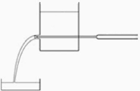

IYPT 2010 Problems
Problems for the 23rd IYPT 2010
1. Electromagnetic cannon
A solenoid can be used to fire a small ball. A capacitor is used to energize the solenoid coil. Build a device with a capacitor charged to a maximum 50V. Investigate the relevant parameters and maximize the speed of the ball.
2. Brilliant pattern
Suspend a water drop at the lower end of a vertical pipe. Illuminate the drop using a laser pointer and observe the pattern created on a screen. Study and explain the structure of the pattern.
3. Steel balls
Colliding two large steel balls with a thin sheet of material (e.g. paper) in between may “burn” a hole in the sheet. Investigate this effect for various materials.
4. Soap film
Create a soap film in a circular wire loop. The soap film deforms when a charged body is placed next to it. Investigate how the shape of the soap film depends on the position and nature of the charge.
5. Grid
A plastic grid covers the open end of a cylindrical vessel containing water. The grid is covered and the vessel is turned upside down. What is the maximal size of holes in the grid so that water does not flow out when the cover is removed?
6. Ice
A wire with weights attached to each end is placed across a block of ice. The wire may pass through the ice without cutting it. Investigate the phenomenon.
7. Two flasks
Two similar flasks (one is empty, one contains water) are each connected by flexible pipes to a lower water reservoir. The flasks are heated to 100°C and this temperature is held for some time. Heating is stopped and as the flasks cool down, water is drawn up the tubes. Investigate and describe in which tube the water goes up faster and in which the final height is greater. How does this effect depend on the time of heating?
8. Liquid light guide
A transparent vessel is filled with a liquid (e.g. water). A jet flows out of the vessel. A light source is placed so that a horizontal beam enters the liquid jet (see picture). Under what conditions does the jet operate like a light guide?

9. Sticky water
When a horizontal cylinder is placed in a vertical stream of water, the stream can follow the cylinder’s circumference along the bottom and continue up the other side before it detaches. Explain this phenomenon and investigate the relevant parameters.
10. Calm surface
When wind blows across a water surface, waves can be observed. If the water is covered by an oil layer, the waves on the water surface will diminish. Investigate the phenomenon.
11. Sand
Dry sand is rather ‘soft’ to walk on when compared to damp sand. However sand containing a significant amount of water becomes soft again. Investigate the parameters that affect the softness of sand.
12. Wet towels
When a wet towel is flicked, it may create a cracking sound like a whip. Investigate the effect. Why does a wet towel crack louder than a dry one?
13. Shrieking rod
A metal rod is held between two fingers and hit. Investigate how the sound produced depends on the position of holding and hitting the rod?
14. Magnetic spring
Two magnets are arranged on top of each other such that one of them is fixed and the other one can move vertically. Investigate oscillations of the magnet.
15. Paper anemometer
When thin strips of paper are placed in an air flow, a noise may be heard. Investigate how the velocity of the air flow can be deduced from this noise?
16. Rotating spring
A helical spring is rotated about one of its ends around a vertical axis. Investigate the expansion of the spring with and without an additional mass attached to its free end.
17. Kelvin’s dropper
Construct Kelvin’s dropper. Measure the highest voltage it can produce. Investigate its dependence on relevant parameters.